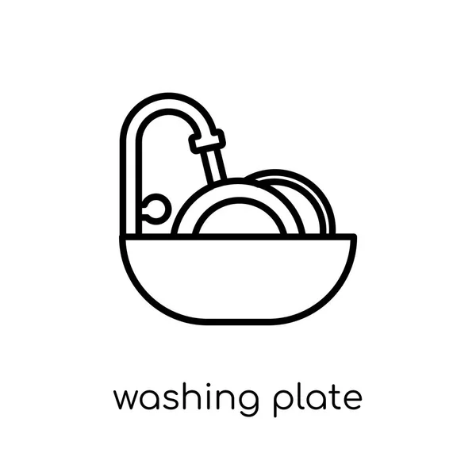

5 Jobs
Security Officer
Overall, security officers are tasked with securing
the premises and personnel by staying on patrol,
monitoring surveillance equipment,
performing building inspections,
guarding entry points, and verifying visitors.
More Details
Apply Now
2 Open Positions
Cashier
Collects payments by accepting cash, check, or charge payments
from customers and makes change for cash customers.
Verifies credit acceptance by reviewing and recording
driver's license number; and operating credit card authorization systems.
Balances cash drawer by counting cash at beginning and
end of work shift.
More Details
Apply Now
3 Open Positions
Barman
Receives orders from patrons and waitstaff.
Prepares and serves, drinks as ordered.
More Details
Apply Now
4 Open Positions

Steward
Greeting customers, guiding them to tables
and delivering drinks from the bartender.
Clearing, cleaning and setting tables.
Ensuring serving stations are stocked with cutlery,
napkins, trays, and condiments.
Sweeping and mopping floors in the restaurant and kitchen
More Details
Apply Now
4 Open Positions
Chef
Direct the preparation, seasoning, and cooking of salads,
soups, fish, meats, vegetables, desserts, or other foods.
Plan and price menu items, orders supplies,
and keep records and accounts. Supervises and participate
in cooking and baking and the preparation of foods.
More Details
Apply Now
1 Open Positions
Chef Accountant
Your job duties as chief accountant include overseeing the accounting
department, developing financial strategies, making investment decisions,
helping company leadership with strategic planning,
and making sure the company complies with state and
financial regulations.
More Details
Apply Now
4 Open Positions

IT Technician
responsible for installing, maintaining and repairing hardware
& software components of the organization's computers.
They also support these systems through remote access or
site visits as needed by management teams within their company.
More Details
Apply Now
1 Open Positions
Food & Beverage Server
Preparing restaurant tables with special attention to sanitation and order
Attending to customers upon entrance to the restaurant
Presenting menus, serving and helping customers select food/beverages
More Details
Apply Now
5 Open Positions

HouseKeeper
responsible for taking care of a building's general cleanliness
to provide tidy and sanitary amenities to guests and residents.
Their duties include cleaning floors, making beds and dusting
surfaces throughout a home or other building.
More Details
Apply Now
6 Open Positions
Store Keeper
Collect, process, and document all merchandise received and paid
for, assisting with inventory activities as necessary.
Assist in receiving all merchandise from suppliers.
Check all merchandise for discrepancies and damages.
Sort merchandise according to pricing and location at store.
More Details
Apply Now
1 Open Positions
Pool Guard
Warns swimmers of improper activities or danger and enforces
pool regulations and water safety policies.
Administers first aid in the event of injury,
rescues swimmers in distress or danger of drowning,
and administers CPR and/or artificial respiration, if necessary.
More Details
Apply Now
2 Open Positions
Maint. Technicain
Maintenance Engineers are responsible for the continuous
operation of machinery and equipment. Using computerised
systems, they organise repairs and oversee routine
maintenance. They're also involved with monitoring and
control devices and sometimes in the creation of items
that will help in equipment maintenance.
More Details
Apply Now
2 Open Positions